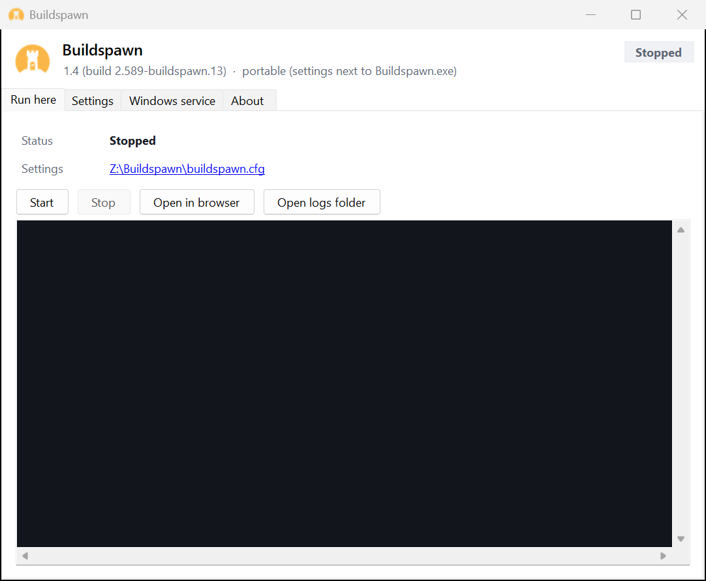
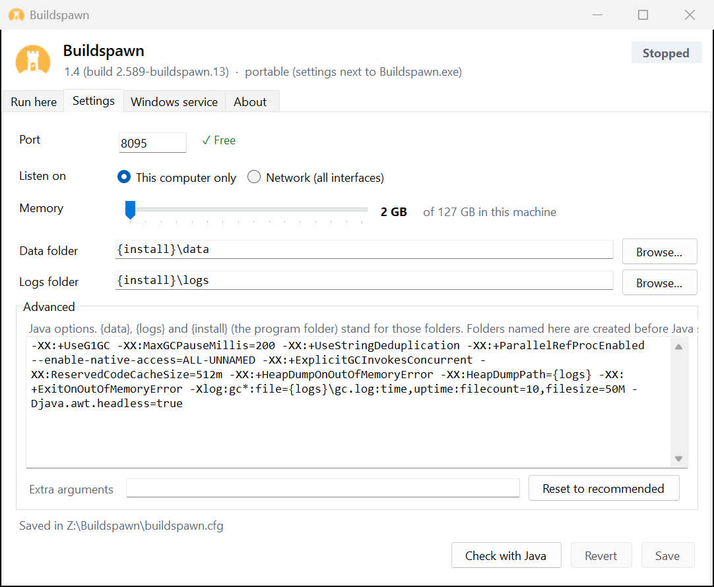
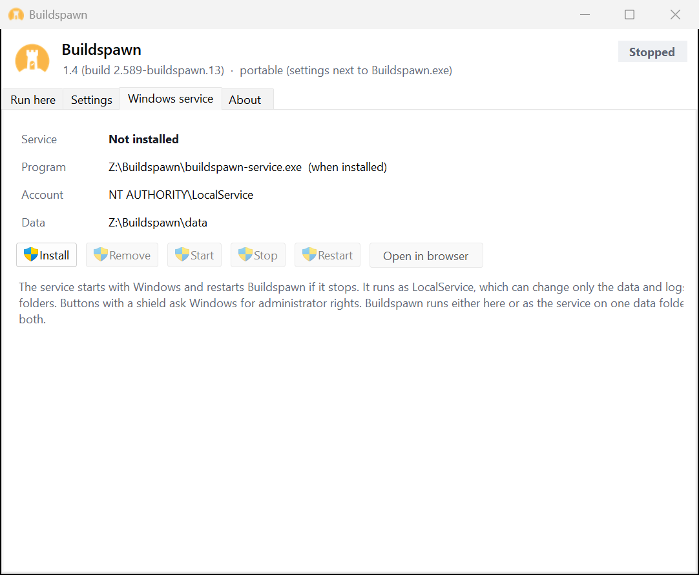

The Windows app
Start, stop and set up Buildspawn on Windows from one small window.
Open the app
The app is Buildspawn.exe in the program folder. After setup, open Buildspawn from the Start menu. With the portable zip, open Buildspawn.exe in the folder you unzipped.
The top of the window shows the version, whether this copy is installed or portable, and the state of the server on the right (Stopped or Running). The app has five tabs: Run here, Settings, Windows service, Certificates and About.
Run here

This tab runs Buildspawn on this computer, inside the app.
- Click Start. The log fills the black area as the server starts.
- On the very first start, the app shows the initial admin password with a Copy button. You need it once, on the first web page. See First start and sign-in.
- Click Open in browser to open the web interface.
- Click Stop to stop the server. Open logs folder opens the folder with
buildspawn.log,gc.logand any heap dumps.
If you close the window while the server runs, the app asks whether to stop it or keep it running in the notification area. The tray icon has Open, Open in browser, Stop and Exit.
Settings

Here you change how the server runs:
| Setting | What it does |
|---|---|
| Port | The web port. 8080 by default. The app tells you if another program already uses it. |
| Listen on | This computer only, or Network (all interfaces) so other machines and agents can connect. |
| Memory | How much memory Java may use for the server. |
| Data folder | Jobs, build history and settings. |
| Logs folder | buildspawn.log, gc.log and heap dumps. |
| Java options (Advanced) | Extra options for Java. The default is the recommended set. Reset to recommended brings it back. |
| Extra arguments (Advanced) | Extra server arguments, for example --sessionTimeout=480. |
In the folders and Java options, {data}, {logs} and {install} (the program folder) stand for those folders.
- Change what you need.
- Click Check with Java to try the options before you rely on them.
- Click Save. The app writes
buildspawn.cfg. Revert drops your changes. - Restart Buildspawn so the new settings take effect.
The app and the Windows service share one settings file, buildspawn.cfg. After setup it is in C:\ProgramData\Buildspawn. In the portable zip it is next to Buildspawn.exe.
Windows service

The service starts with Windows and restarts Buildspawn if it stops. Use it for a build server that must keep running when nobody is signed in.
- Click Install. Windows asks for administrator rights.
- Click Start, or restart the computer.
- Click Open in browser to check that it runs.
Remove, Start, Stop and Restart also ask for administrator rights. You don't need to open the app as administrator.
Buildspawn runs either in the app or as the service on one data folder, never both at once. Stop it on the Run here tab before you start the service.
The service account
The service runs as the LocalService account. It can change only the data and logs folders. If your builds need more, such as tools or files elsewhere or network shares, use another account:
- Open Windows Services and find Buildspawn.
- On the Log On tab, choose the account.
- Give that account Modify rights on the data and logs folders.
- Restart the service.
When the service stops at once
If Buildspawn stops within seconds of starting, for example because a Java option names a folder that can't be created, the reason goes to the Windows Application event log (source Buildspawn) and to logs\buildspawn.log.
From a command prompt
In the program folder, from a command prompt opened as administrator:
buildspawn-service install | uninstall | start | stop | restart | statusWithout administrator rights:
buildspawn-service check
buildspawn-service runcheck checks the settings, runs Java with the options and shows the Java command. run runs Buildspawn in the command prompt until you press Enter.
Certificates
Use this tab when your company has its own certificate authority (CA), so Buildspawn trusts addresses signed by it, for example your Perforce server or an internal store. You do not need to edit Java's own certificate file. What you add here is kept when you upgrade.
- Open the Certificates tab. Certificates you added lists what is there now, and how many come built into Java.
- Click Add…. Paste Base64 text or choose a
.pem,.crt,.cer,.deror.p7bfile. Check the preview and add it. Private keys are refused. - To remove one, select it and click Remove. View… shows its details.
- Tick Also trust Windows' certificate store if your IT team pushes the root certificate with group policy. No import is needed then.
- A band says Changes take effect when the server starts again. Click Restart now (or Restart the service when Buildspawn runs as the service).
The tab also shows the trust folder. Changing it needs administrator rights when the folder is under Program Files or ProgramData. You can do the same on the server's web page, under Settings › Security › Trusted certificates, and from the terminal with buildspawn certs list.
About
The About tab shows the version and the licences of Buildspawn and the bundled Java runtime.
The terminal program
Windows also has a terminal program, bin\buildspawn.exe. It uses the same settings file, folders and service as the app, so you can use both. See The terminal program.